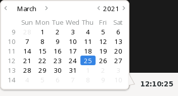
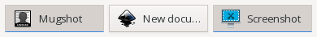
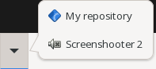
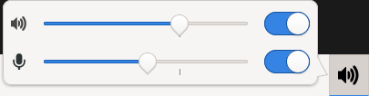
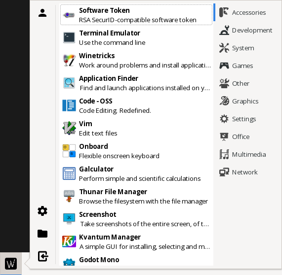

Applets
Clock
[[panel.applet]]
name = "clock"
format = "%X"
[panel.applet.font]
family = ""
style = "normal"
weight = "bold"
size = -1
strikethrough = false
underline = "none"
letter_spacing = -1
-1 or “” means the default setting. Basically all of this is setted to default and applet will be alive without this config.
Parameter |
Description |
Content |
format |
strftime format string |
Any strftime-compliant string |
font.family |
A font familiy |
Any font in your pc e.g. ‘Comic Sans’ |
font.style |
Style of the font |
normal, oblique or italic |
font.weight |
Weight of the font |
thin, ultrathin, semilight, book, normal, medium, semibold, bold, ultrabold, heavy, ultraheavy |
font.size |
Size of the font |
Any positive integer or -1 for default value |
font.strikethrough |
You know what that means. |
true or false |
font.underline |
Underline. |
none, single, double, low, error |
font.letter_spacing |
Spacing between letters |
Any positive integer or -1 for default value |
GTK and CSS structure:
GtkButton[(.|#)clock(-id)]
| - GtkLabel
GtkPopover[(.|#)clock-popover(-id)]
| - GtkCalendar
Separator
[[panel.applet]]
name = "separator"
stretch = true
margin_start = 0
margin_end = 0
This is the default config of separator applet. All you need to know is, stretch extends applet to fill all of the panel, margin_start and margin_end changes margins of applet.
Task switcher
[[panel.applet]]
name = "task-switcher"
[panel.applet.mode.scroll]
fallback_icon = "application-x-executable"
expand = true
minimum_windows_per_row = 6
maximum_windows_per_row = 12
[panel.applet.mode.scroll.button]
icon_only = false
gap = 8
flat = false
icon_height = -1
This text above is default settings. You can ommit all of this but name must be present. -1 means automatic option.
Parameter |
Description |
Content |
mode.scroll.fallback_icon |
Fallback icon if applet can’t find any. |
Text |
mode.scroll.expand |
If applet should expand to fill as much space as possible. |
true/false |
mode.scroll.minimum_windows_per_row |
Minimum window buttons per task bar row. |
Integer |
mode.scroll.maximum_windows_per_row |
Maximum window buttons per task bar row. |
Integer |
mode.scroll.button.icon_only |
If only icon should be presented on button. |
true/false |
mode.scroll.button.gap |
Gap between icon and window title. |
Integer |
mode.scroll.button.flat |
If button should be without shadows. |
true/false |
mode.scroll.button.icon_height |
Height of icon. |
Integer |
GTK and CSS structure:
GtkScrolledWindow[(.|#)task-switcher(-id)] // Window list
| - GtkFlowBox
| | - GtkFlowBoxChild
GtkFlowBoxChild // Single window button
| - GtkToggleButton
| | - GtkBox
| | | - GtkImage
| | | - GtkLabel
GtkMenu[(.|#)task-switcher-context-menu(-id)]
| ...
Activator
[[panel.applet]]
name = "activator"
flat = false
icon_height = -1
[[panel.applet.activator]]
type = "application"
name = "Screenshooter"
description = "You know what this means"
icon = "application-x-executable"
command = "<SOME SCREENSHOOTER APP>"
working_directory = ""
[[panel.applet.activator]]
type = "hypertext"
name = "Wapanel repository"
description = "Shortcut to wapanel's repository"
icon = "application-x-executable"
url = "https://github.com/firstbober/wapanel"
This text above is default settings. You can ommit all of this but root name must be present. -1 means automatic option.
Parameter |
Description |
Content |
flat |
Should activator buttons be flat. |
true/false |
icon_height |
Height of the icon in activator. |
Integer |
activator.type |
Type of activator. |
Text(application/hypertext) |
activator.name |
Name of activator. |
Text |
activator.description |
Description of activator. |
Text |
activator.icon |
Icon of activator. |
Text |
activator.command |
Command that activator should execute. |
Text |
activator.working_directory |
Working directory of executed command. |
Text |
activator.url |
URL of website. |
Text |
GTK and CSS structure:
GtkBox[(.|#)activator(-id)]
| - GtkButton
| | ...
| - GtkMenuButton
| | - GtkPopover[(.|#)activator-popover(-id)]
| | | - GtkButton
| | | | ...
| | | ...
GtkButton
| - GtkImage
| - GtkLabel
Volume control
[[panel.applet]]
name = "volume-control"
flat = false
icon_height = -1
sound_mixer = ""
This text above is default settings. You can ommit all of this but root name must be present. -1 means automatic option.
Parameter |
Description |
Content |
flat |
Should activator buttons be flat. |
true/false |
icon_height |
Height of icon on panel. |
Integer |
sound_mixer |
Command to execute using Sound Mixer. |
Text |
GTK and CSS structure:
GtkMenuButton[(.|#)volume-control(-id)]
| - GtkImage
GtkPopover[(.|#)volume-control-popover(-id)]
| - GtkBox
| | - GtkBox // Volume control
| | - GtkBox // Volume control
GtkBox // Volume control
| - GtkImage
| - GtkScale
| - GtkSwitch
App finder
[[panel.applet]]
name = "app-finder"
icon = ""
icon_height = -1
flat = false
popover_width = -1
popover_height = -1
user_manager = ""
settings = ""
file_manager = ""
[panel.applet.logout]
shutdown = ""
restart = ""
logout = ""
suspend = ""
hibernate = ""
lock = ""
This text above is default settings. You can ommit all of this but root name must be present. -1 means automatic option.
Parameter |
Description |
Content |
flat |
Should activator buttons be flat. |
true/false |
icon_height |
Height of icon on panel. |
Integer |
icon |
Icon of button. |
Text |
popover_width |
Width of app finder popover. |
Integer |
popover_height |
Height of app finder popover. |
Integer |
user_manager |
Executable name of account settings. |
Text |
settings |
Executable name of system settings. |
Text |
file_manager |
Executable name of file manager. |
Text |
Logout popover:
Parameter |
Description |
Content |
shutdown |
Shutdown command. |
Text |
restart |
Restart command. |
Text |
logout |
Logout command. |
Text |
suspend |
Suspend command. |
Text |
hibernate |
Hibernate command. |
Text |
lock |
Lock command. |
Text |
GTK and CSS structure:
GtkMenuButton[(.|#)app-finder(-id)] // Button on panel
| - GtkImage
GtkPopover[(.|#)app-finder-popover(-id)] // Popover after click
| - GtkBox
| |
| | - GtkBox // Sidebar with file manager etc.
| | |
| | | - GtkButton // User settings button
| | | | - GtkImage
| | | |
| | | - GtkBox // Container with action buttons
| | | |
| | | | - GtkButton // Settings button
| | | | | - GtkImage
| | | |
| | | | - GtkButton // File manager button
| | | | | - GtkImage
| | | |
| | | | - GtkButton // Logout button
| | | | | - GtkImage
| | | |
| | |
| |
| | - GtkBox // App list and categories
GtkBox // App list and categories
| - GtkStack
| |
| | - GtkNotebook[(.|#)app-finder-category-notebook(-id)]
| | |
| | | - GtkScrolledWindow[(.|#)app-finder-category-app-list(-id)]
| | | | - GtkViewport
| | | | - GtkListBox
GtkPopover[(.|#)app-finder-popover(-id)] // Popover popped after logout button
| - GtkButton // Some action eg. logout
| |
| | - GtkBox
| | | - GtkImage
| | | - GtkLabel
| | |
| |
| ... // More buttons